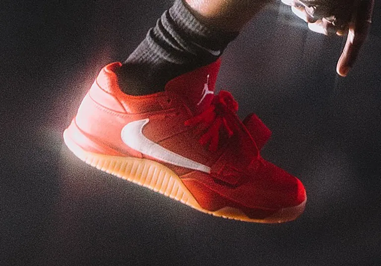
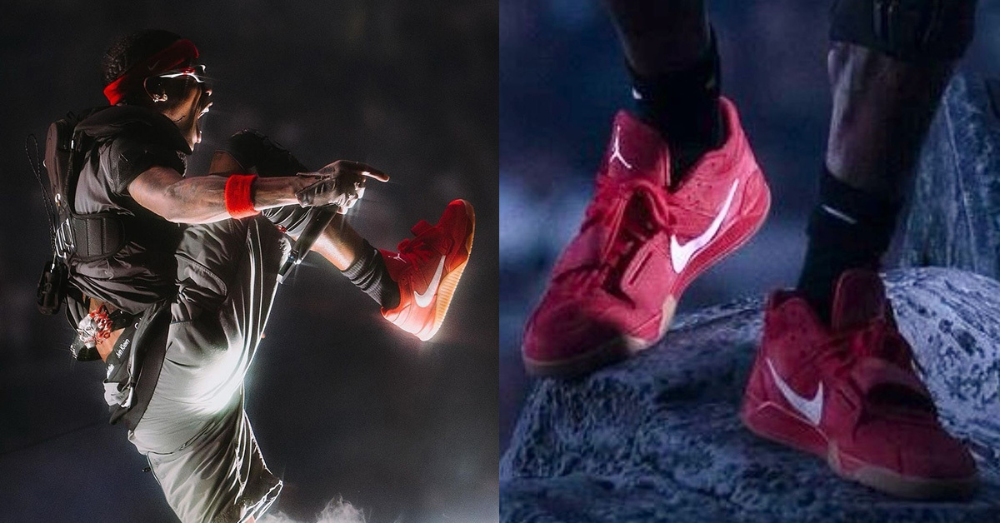

nuevas jumpman jack red gum
Travis Scott lo ha vuelto a hacer. Durante uno de sus conciertos, el rapero de Houston apareció con un par nunca antes visto de sus Jordan Jumpman Jack, esta vez en una versión “Red Gum”, una combinación que equilibra agresividad, diseño retro y la estética desgastada que tanto caracteriza su línea junto a Jordan Brand. Bastó una aparición sobre el escenario para que el público y los foros especializados se encendieran: había nacido una nueva obsesión sneakerhead.

La Jumpman Jack representa un punto de inflexión en la relación entre Travis Scott y Nike / Jordan. Hasta ahora, sus colaboraciones se habían centrado en reinterpretar clásicos —Air Jordan 1, Dunk Low, Air Force 1—, pero este modelo es distinto: es la primera zapatilla completamente nueva creada con la participación directa de Travis en su diseño. Su estructura mezcla la inspiración del baloncesto de los 90 con el lenguaje contemporáneo del streetwear y la cultura del skate, fusionando lo atlético con lo urbano de una forma que solo Travis podría hacer.
Travis presentó las Red Gum durante uno de los shows de su gira “Utopia Circus Maximus”, en una aparición que combinó luces rojas, humo y visuales infernales. El contraste entre la zapatilla y el entorno escénico no fue casualidad: simboliza la fusión entre la energía del directo y el estilo urbano que domina su estética.
En cuestión de horas, las imágenes del concierto se viralizaron en redes, y los fans comenzaron a especular sobre una posible lanzamiento exclusivo vinculado a la gira. Aunque aún no hay confirmación oficial, se espera que esta colorway llegue en 2025 como edición limitada.